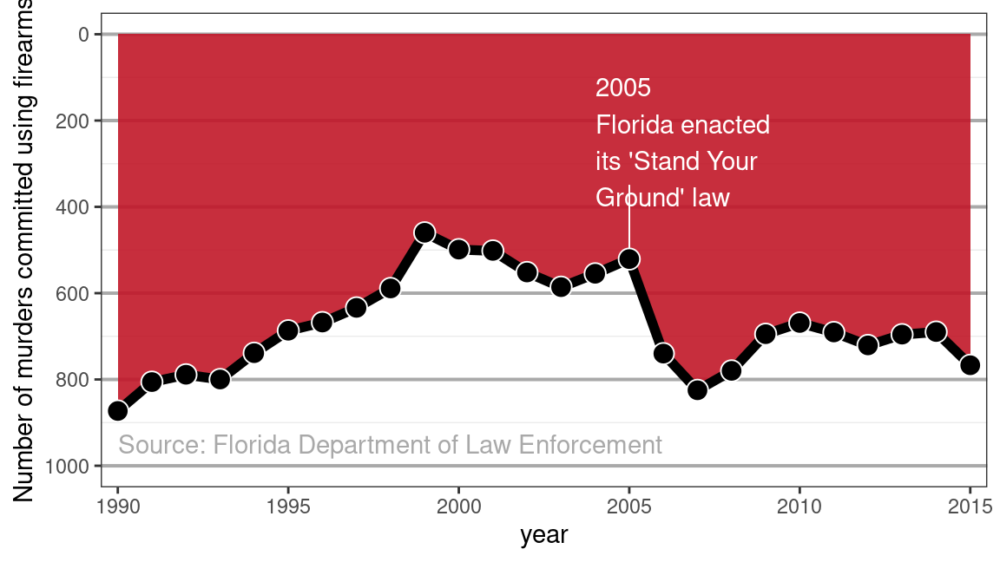
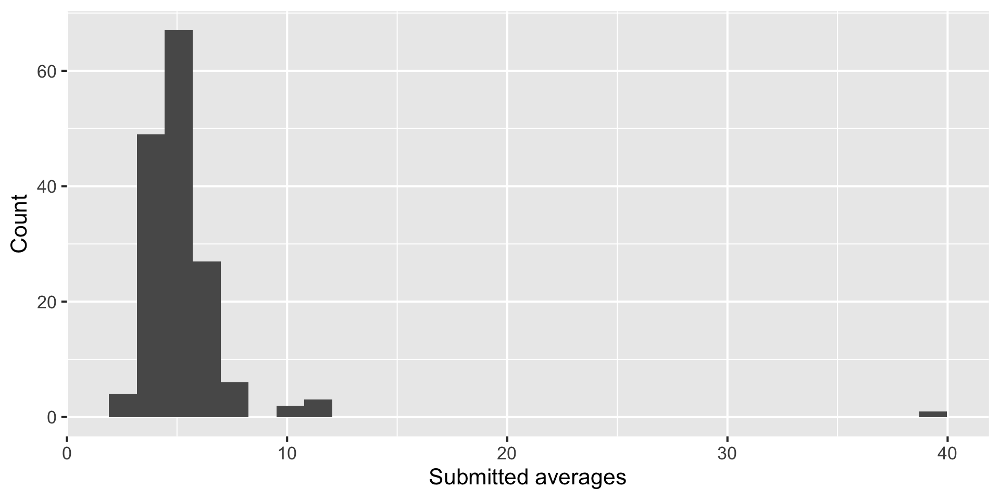
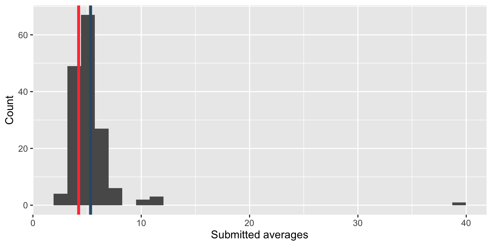
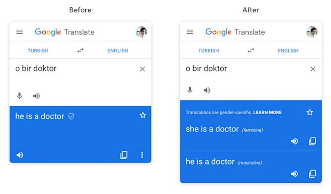
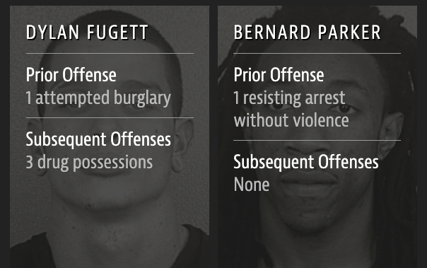
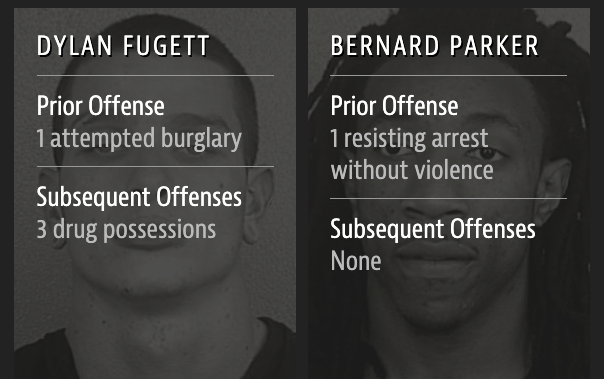

{kind=link}
03:00
Data science ethics
Lecture 13
Warm up
While you wait for class to begin…
Any questions from prepare materials?
Announcements
- Fill out TEAMMATES survey to provide feedback to your teammates bu Sunday night (and to let us know how things are going)
- Submit AE 09 (the R script and the Quarto document) by Sunday night
- Submit Lab 4 by Monday morning
Questions from last time
How do you do that keyboard shortcut where you like drag down text selecting?
. . .
How do you know when to clean extra space after text if you cannot specifically see the spaces?
. . .
Will there be a curve for the test?
Guidelines and best practices for using Chat GPT
- Do not just copy-paste the prompt – for appropriate academic conduct, for your own learning, and for getting to better results faster
- Engineer the prompt until the response starts to look like code you’re learning in the course
- If the response is not correct, ask for a correction
- If the response doesn’t follow the guidelines, ask for a correction
- Do not just copy-paste code from Chat GPT responses, run it line-by-line and edit as needed
- Watch out for clear mistakes in the response: do not keep loading packages that are already loaded, use the base pipe
|>, use tidyverse-based code, etc.
Today
Data science ethics:
Misrepresentation
Data privacy
Algorithmic bias
Misrepresentation
Stand your ground
In 2005, the Florida legislature passed the controversial “Stand Your Ground” law that broadened the situations in which citizens can use lethal force to protect themselves against perceived threats. Advocates believed that the new law would ultimately reduce crime; opponents feared an increase in the use of lethal force.
Stand your ground
What does the visualization, published by Reuters on February 16, 2014, say about the number of firearm murders in Florida over the years?

Data privacy
“Your” data
Every time we use apps, websites, and devices, our data is being collected and used or sold to others.
More importantly, decisions are made by law enforcement, financial institutions, and governments based on data that directly affect the lives of people.
Privacy of your data
What pieces of data have you left on the internet today? Think through everything you’ve logged into, clicked on, checked in, either actively or automatically, that might be tracking you. Do you know where that data is stored? Who it can be accessed by? Whether it’s shared with others?
What does Google think/know about you?
Have you ever thought about why you’re seeing an ad on Google? Google it! Try to figure out if you have ad personalization on and how your ads are personalized.
03:00
Your browing history
Which of the following are you OK with your browsing history to be used towards?
- For serving you targeted ads
- To score you as a candidate for a job
- To predict your race/ethnicity for voting purposes
Who else gets to use your data?
Suppose you create a profile on a social media site and share your personal information on your profile. Who else gets to use that data?
- Companies the social media company has a connection to?
- Companies the social media company sells your data to?
- Researchers?
OK Cupid data breach
- In 2016, researchers published data of 70,000 OkCupid users—including usernames, political leanings, drug usage, and intimate sexual details
- Researchers didn’t release the real names and pictures of OKCupid users, but their identities could easily be uncovered from the details provided, e.g. usernames
. . .
Some may object to the ethics of gathering and releasing this data. However, all the data found in the dataset are or were already publicly available, so releasing this dataset merely presents it in a more useful form.
Researchers Emil Kirkegaard and Julius Daugbjerg Bjerrekær

Algorithmic bias
Gettysburg address
Randomly select 10 words from the Gettysburg Address and calculate the mean number of letters in these 10 words. Submit your answer at bit.ly/bit.ly/gburg-s24.
03:00
Your responses
✔ Reading from "Gettysburg address - Spring 2024 (Responses)".✔ Range 'Form Responses 1'.`stat_bin()` using `bins = 30`. Pick better value with `binwidth`.
Comparison to “truth”
`stat_bin()` using `bins = 30`. Pick better value with `binwidth`.
Garbage in, garbage out
- In statistical modeling and inference we talk about “garbage in, garbage out” – if you don’t have good (random, representative) data, results of your analysis will not be reliable or generalizable.
- Corollary: Bias in, bias out.
Google translate
What might be the reason for Google’s gendered translation? How do ethics play into this situation?

Stochastic parrots
On the Dangers of Stochastic Parrots: Can Language Models Be Too Big? 🦜 (Bender et. al., 2021)
The past 3 years of work in NLP have been characterized by the development and deployment of ever larger language models, especially for English. BERT, its variants, GPT-2/3, and others, most recently Switch-C, have pushed the boundaries of the possible both through architectural innovations and through sheer size. Using these pretrained models and the methodology of fine-tuning them for specific tasks, researchers have extended the state of the art on a wide array of tasks as measured by leaderboards on specific benchmarks for English. In this paper, we take a step back and ask: How big is too big? What are the possible risks associated with this technology and what paths are available for mitigating those risks? We provide recommendations including weighing the environmental and financial costs first, investing resources into curating and carefully documenting datasets rather than ingesting everything on the web, carrying out pre-development exercises evaluating how the planned approach fits into research and development goals and supports stakeholder values, and encouraging research directions beyond ever larger language models.
05:00
What is meant by “stochastic parrots” in the paper title?
Machine Bias
2016 ProPublica article on algorithm used for rating a defendant’s risk of future crime:
In forecasting who would re-offend, the algorithm made mistakes with black and white defendants at roughly the same rate but in very different ways.
The formula was particularly likely to falsely flag black defendants as future criminals, wrongly labeling them this way at almost twice the rate as white defendants.
White defendants were mislabeled as low risk more often than black defendants.

Source: ProPublica
Risk score errors
What is common among the defendants who were assigned a high/low risk score for reoffending?


 

Risk scores
How can an algorithm that doesn’t use race as input data be racist?

Predicting ethnicity
Improving Ecological Inference by Predicting Individual Ethnicity from Voter Registration Record (Imran and Khan, 2016)
In both political behavior research and voting rights litigation, turnout and vote choice for different racial groups are often inferred using aggregate election results and racial composition. Over the past several decades, many statistical methods have been proposed to address this ecological inference problem. We propose an alternative method to reduce aggregation bias by predicting individual-level ethnicity from voter registration records. Building on the existing methodological literature, we use Bayes’s rule to combine the Census Bureau’s Surname List with various information from geocoded voter registration records. We evaluate the performance of the proposed methodology using approximately nine million voter registration records from Florida, where self-reported ethnicity is available. We find that it is possible to reduce the false positive rate among Black and Latino voters to 6% and 3%, respectively, while maintaining the true positive rate above 80%. Moreover, we use our predictions to estimate turnout by race and find that our estimates yields substantially less amounts of bias and root mean squared error than standard ecological inference estimates. We provide open-source software to implement the proposed methodology. The open-source software is available for implementing the proposed methodology.
wru package
The said “source software” is the wru package: https://github.com/kosukeimai/wru.
Do you have any ethical concerns about installing this package?
wru package
Was the publication of this model ethical? Does the open-source nature of the code affect your answer? Is it ethical to use this software? Does your answer change depending on the intended use?
library(wru)
predict_race(voter.file = voters, surname.only = TRUE) |>
select(surname, contains("pred")) surname pred.whi pred.bla pred.his pred.asi pred.oth
1 Khanna 0.045110474 0.003067623 0.0068522723 0.860411906 0.084557725
2 Imai 0.052645440 0.001334812 0.0558160072 0.719376581 0.170827160
3 Rivera 0.043285692 0.008204605 0.9136195794 0.024316883 0.010573240
4 Fifield 0.895405704 0.001911388 0.0337464844 0.011079323 0.057857101
5 Zhou 0.006572555 0.001298962 0.0005388581 0.982365594 0.009224032
6 Ratkovic 0.861236727 0.008212824 0.0095395642 0.011334635 0.109676251
7 Johnson 0.543815322 0.344128607 0.0272403940 0.007405765 0.077409913
8 Lopez 0.038939877 0.004920643 0.9318797791 0.012154125 0.012105576
10 Wantchekon 0.330697188 0.194700665 0.4042849478 0.021379541 0.048937658
9 Morse 0.866360147 0.044429853 0.0246568086 0.010219712 0.054333479wru package
me <- tibble(surname = "Rundel")
predict_race(voter.file = me, surname.only = TRUE)Predicting race for 2020Warning: Unknown or uninitialised column: `state`.Proceeding with last name predictions...ℹ All local files already up-to-date! surname pred.whi pred.bla pred.his pred.asi pred.oth
1 Rundel 0.9177967 0 0 0 0.08220329